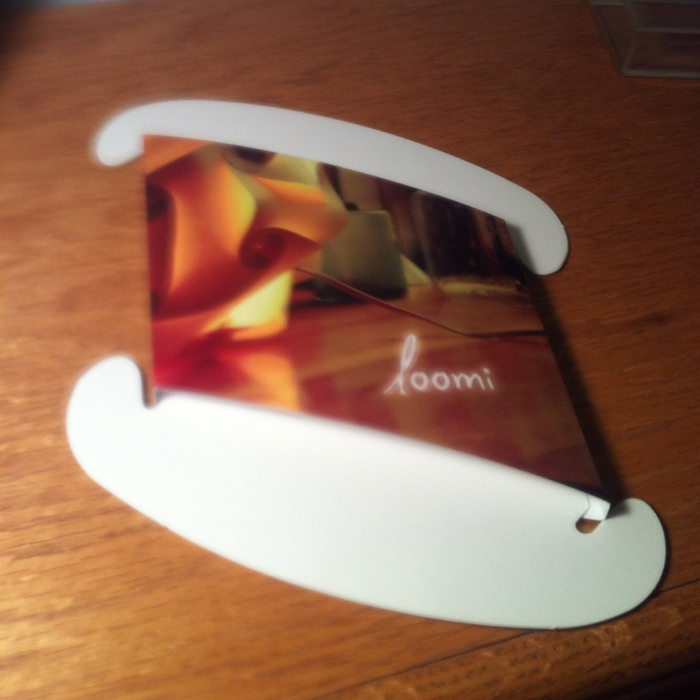
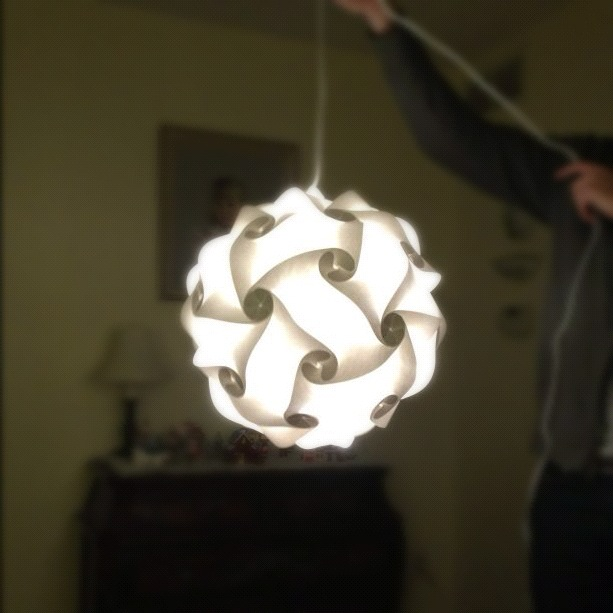

<!DOCTYPE html>
<html lang="en">
  <head>
        <meta charset="UTF-8" />
    <link rel="alternate" type="application/rss+xml" title="RSS" href="/rss.xml" />
    <meta name="viewport" content="width=device-width" />

    <!-- <link href="assets/css/meny.css" rel = "stylesheet"> -->
    <link href="theme/css/main_pelican.css" rel="stylesheet">

    <link rel="apple-touch-icon-precomposed" href="media/blog_logo.png"/>
    <link rel="shortcut icon" href="media/blog_logo.png"/>
    <link rel="icon" type="image/png" href="media/blog_logo.png" sizes="16x16 32x32">
    <link href='http://fonts.googleapis.com/css?family=PT+Sans:400,700|Merriweather:300,900' rel='stylesheet' type='text/css'>

    <title>Jay Hickey</title>

    <!-- Google Analytics -->
    <script type="text/javascript">
    var _gaq = _gaq || [];
    _gaq.push(['_setAccount', 'UA-32102758-1']);
    _gaq.push(['_setDomainName', 'none']);
    _gaq.push(['_setAllowLinker', 'true']);
    _gaq.push(['_trackPageview']);

    (function() {
      var ga = document.createElement('script'); ga.type = 'text/javascript'; ga.async = true;
      ga.src = ('https:' == document.location.protocol ? 'https://ssl' : 'http://www') + '.google-analytics.com/ga.js';
      var s = document.getElementsByTagName('script')[0]; s.parentNode.insertBefore(ga, s);
    })();
    </script>


<!--
    <link href="http://fonts.googleapis.com/css?family=Arimo:400,700|Inika" rel="stylesheet" type="text/css" />
    <link rel="stylesheet" type="text/css" href="./theme/bootstrap.css" />
    <link rel="stylesheet" type="text/css" href="./theme/pastie.css" />
    <link href="" type="application/atom+xml" rel="alternate" title="Jay Hickey Atom Feed" />
        <link href="rss.xml" type="application/rss+xml" rel="alternate" title="Jay Hickey RSS Feed" />
        
     -->

  </head>

  <body>
    <div class="meny-contents">


        <div id="mastheadbackground">&nbsp;</div>

        <section id="posts">

            <div id="masthead">
                <h1><a href="/">Jay Hickey</a></h1>

                <p id="description">Technology, life, and fascinating web encounters.</p>

                <nav>
                    <a href="about">About</a>
                    &nbsp;
                    |
                    &nbsp;
                    <a href="highlights"> Highlights</a>
                    &nbsp;
                    |
                    &nbsp;
                    <a href="twitter"> Twitter</a>
                </nav>
            </div>
        <div id="container">

            
                <article>
    
                <header>
                    <h2>
                                                    <a href="./2012/06/second-crack-bookmarklet-for-videos"
                            rel="bookmark">Second Crack Bookmarklet For Embedding Videos</a>
                                                                       </h2>

                    <p>
                        <time datetime="" pubdate="pubdate">June 17, 2012</time>
                        &#0020;
                        <a class="permalink" title="Permalink to Second Crack Bookmarklet For Embedding Videos" href="2012/06/second-crack-bookmarklet-for-videos">&#x271c;</a>
                    </p>
                </header>

                <p>So far, <a href="https://github.com/marcoarment/secondcrack">Second Crack</a> has been really nice for blogging. The included bookmarklets have been indispensable for drafting quick links from my iPhone or iPad, but there's no easy way to post videos. I watch tons of videos on the web, and would love to be able to share them here. So I created a bookmarklet that makes it simple to do that.</p>
<p>This is the first time I've ever worked with PHP, so I'm definitely out of my comfort zone. But I'm pleased with my implementation. The bulk of the functionality relies on two functions:</p>
<p><code>get_html</code> uses <a href="http://curl.haxx.se/">cURL</a> to easily return the HTML of the current page as a string:</p>
<div class="highlight"><pre><span class="x">   
    <span class="k">function</span> <span class="nf">get_html</span><span class="p">(</span><span class="nv">$url</span><span class="p">)</span> <span class="p">{</span>
        <span class="nv">$ch</span> <span class="o">=</span> <span class="nb">curl_init</span><span class="p">();</span>
        <span class="nv">$timeout</span> <span class="o">=</span> <span class="mi">5</span><span class="p">;</span>
        <span class="nb">curl_setopt</span><span class="p">(</span><span class="nv">$ch</span><span class="p">,</span><span class="nx">CURLOPT_URL</span><span class="p">,</span><span class="nv">$url</span><span class="p">);</span>
        <span class="nb">curl_setopt</span><span class="p">(</span><span class="nv">$ch</span><span class="p">,</span><span class="nx">CURLOPT_RETURNTRANSFER</span><span class="p">,</span><span class="mi">1</span><span class="p">);</span>
        <span class="nb">curl_setopt</span><span class="p">(</span><span class="nv">$ch</span><span class="p">,</span><span class="nx">CURLOPT_CONNECTTIMEOUT</span><span class="p">,</span><span class="nv">$timeout</span><span class="p">);</span>
        <span class="nv">$data</span> <span class="o">=</span> <span class="nb">curl_exec</span><span class="p">(</span><span class="nv">$ch</span><span class="p">);</span>
        <span class="nb">curl_close</span><span class="p">(</span><span class="nv">$ch</span><span class="p">);</span>
        <span class="k">return</span> <span class="nv">$data</span><span class="p">;</span>
    <span class="p">}</span>

</pre></div>

<p>Pretty straightforward. By setting <code>CURLOPT_RETURNTRANSFER</code> to TRUE, <code>curl_exec</code> is returned as a string instead of being output directly.</p>
<p><code>video_embed</code> finds the ID of the video and returns an HTML iframe for embedding:</p>
<div class="highlight"><pre><span class="x">

   <span class="k">function</span> <span class="nf">video_embed</span><span class="p">(</span><span class="nv">$html</span><span class="p">)</span> <span class="p">{</span>
        <span class="nv">$vimeo</span> <span class="o">=</span> <span class="k">array</span><span class="p">(</span><span class="s1">&#39;#player.vimeo.com/video/([0-9]*)#i&#39;</span><span class="p">);</span>
        <span class="nv">$youtube</span> <span class="o">=</span> <span class="k">array</span><span class="p">(</span><span class="s1">&#39;#/embed/([0-9a-z_-]+)#i&#39;</span><span class="p">,</span> <span class="s1">&#39;#youtu.be/([0-9a-z_-]+)#i&#39;</span><span class="p">,</span>                 <span class="s1">&#39;#/v/([0-9a-z_-]+)#i&#39;</span><span class="p">,</span> <span class="s1">&#39;#v=([0-9a-z_-]+)#i&#39;</span><span class="p">);</span>

        <span class="k">for</span> <span class="p">(</span><span class="nv">$i</span> <span class="o">=</span> <span class="mi">0</span><span class="p">;</span> <span class="nv">$i</span> <span class="o">&lt;</span> <span class="nb">sizeof</span><span class="p">(</span><span class="nv">$vimeo</span><span class="p">);</span> <span class="nv">$i</span><span class="o">++</span><span class="p">)</span> <span class="p">{</span>
            <span class="nb">preg_match</span><span class="p">(</span><span class="nv">$vimeo</span><span class="p">[</span><span class="nv">$i</span><span class="p">],</span> <span class="nv">$html</span><span class="p">,</span> <span class="nv">$id</span><span class="p">);</span>
            <span class="k">if</span> <span class="p">(</span><span class="nv">$id</span><span class="p">[</span><span class="mi">1</span><span class="p">]</span> <span class="o">!=</span> <span class="k">NULL</span><span class="p">)</span> <span class="p">{</span>
                <span class="k">return</span> <span class="s1">&#39;&lt;iframe src=&quot;http://player.vimeo.com/video/&#39;</span> <span class="o">.</span> <span class="nv">$id</span><span class="p">[</span><span class="mi">1</span><span class="p">]</span> <span class="o">.</span> <span class="s1">&#39;?title=0&amp;amp;byline=0&amp;amp;portrait=0&amp;amp;color=ff0000&amp;amp;fullscreen=1&amp;amp;autoplay=0&quot; frameborder=&quot;0&quot;&gt;&lt;/iframe&gt;&#39;</span><span class="p">;</span>         
            <span class="p">}</span>       
        <span class="p">}</span>

        <span class="k">for</span> <span class="p">(</span><span class="nv">$i</span> <span class="o">=</span> <span class="mi">0</span><span class="p">;</span> <span class="nv">$i</span> <span class="o">&lt;</span> <span class="nb">sizeof</span><span class="p">(</span><span class="nv">$youtube</span><span class="p">);</span> <span class="nv">$i</span><span class="o">++</span><span class="p">)</span> <span class="p">{</span>
            <span class="nb">preg_match</span><span class="p">(</span><span class="nv">$youtube</span><span class="p">[</span><span class="nv">$i</span><span class="p">],</span> <span class="nv">$html</span><span class="p">,</span> <span class="nv">$id</span><span class="p">);</span>
            <span class="k">if</span> <span class="p">(</span><span class="nv">$id</span><span class="p">[</span><span class="mi">1</span><span class="p">]</span> <span class="o">!=</span> <span class="k">NULL</span><span class="p">)</span> <span class="p">{</span>
            <span class="k">return</span> <span class="s1">&#39;&lt;iframe src=&quot;http://www.youtube.com/embed/&#39;</span> <span class="o">.</span> <span class="nv">$id</span><span class="p">[</span><span class="mi">1</span><span class="p">]</span> <span class="o">.</span> <span class="s1">&#39;?autohide=1&amp;amp;fs=1&amp;amp;autoplay=0&amp;amp;iv_load_policy=3&amp;amp;rel=0&amp;amp;modestbranding=1&amp;amp;showinfo=0&amp;amp;hd=1&quot; frameborder=&quot;0&quot; allowfullscreen&gt;&lt;/iframe&gt;&#39;</span><span class="p">;</span>    
            <span class="p">}</span>
        <span class="p">}</span>   
        <span class="k">return</span> <span class="k">NULL</span><span class="p">;</span>
    <span class="p">}</span>


</pre></div>

<p>The first two lines create arrays of regex patterns for video IDs of both embedded and non-embedded videos.<sup id="fnref:SC"><a class="footnote-ref" href="#fn:SC" rel="footnote">1</a></sup></p>
<p><code>preg_match</code> then searches for a match in the HTML and returns an array called <code>$id</code>. <code>$id[0]</code> has the full text of the regex match and <code>$id[1]</code> has the text that matches the first captured parenthesized subpattern (i.e., just the video ID). Upon a match, embed code is returned with <code>$id[1]</code>'s value in place.</p>
<h3>Notes:</h3>
<ul>
<li>
<p>This bookmarklet only works for <strong>YouTube</strong> and <strong>Vimeo</strong> videos. Pretty much all of my online video viewing is from these two services, so I'm fine with this limitation.</p>
</li>
<li>
<p>Any selected text will also be included in the draft as a blockquote. If no video is found on the current page, the bookmarklet functions just like Second Crack's included "Draft Link".</p>
</li>
</ul>
<p><strong><a href="media/2012/06/add-video.zip">Download</a></strong> the source for the bookmarklet and install it the same way as <a href="https://github.com/marcoarment/secondcrack#posting-with-bookmarklets">Marco instructs</a>. If you already have the other bookmarklets setup, just place <code>add-video.php</code> in the same directory and navigate to, e.g.:</p>
<div class="codehilite"><pre>http://admin.myblog.com/add-video.php
</pre></div>


<p>and install the bookmarklet from there.</p>
<p>Alternatively, I've added this to the existing "Draft Article" and "Draft Link" bookmarklet code. This conveniently keeps all the bookmarklets together and in one file. See the full source at my fork on <a href="https://github.com/jayhickey/secondcrack/blob/master/api-www/add-draft.php">GitHub</a>.</p>
<p>I'm open to all ideas on improving the existing regex, expanding the functionality to other video services, or anything that will make this better. <a href="about">Get in touch</a>.</p>
<div class="footnote">
<hr />
<ol>
<li id="fn:SC">
<p>These are mixes of patterns I threw together and ones found on the web. They've worked against everything I've tried—mobile and non-mobile sites, embedded and non-embedded videos—but there may be some edge cases I've missed.&#160;<a class="footnote-backref" href="#fnref:SC" rev="footnote" title="Jump back to footnote 1 in the text">&#8617;</a></p>
</li>
</ol>
</div>

            </article>
            <div class="fin">&#x2110;&#x210b;</div>

                <article class="link">
    
                <header>
                    <h2>
                                                    <a href="http://www.newyorker.com/online/blogs/frontal-cortex/2012/06/daniel-kahneman-bias-studies.html"
                            rel="bookmark">Why Smart People Are Stupid</a>
                            <span class="linkarrow">&rarr;</span>
                                                                       </h2>

                    <p>
                        <time datetime="" pubdate="pubdate">June 16, 2012</time>
                        &#0020;
                        <a class="permalink" title="Permalink to Why Smart People Are Stupid" href="2012/06/why-smart-people-are-stupid">&#x271c;</a>
                    </p>
                </header>

                <blockquote>
<p>Here’s a simple arithmetic question: A bat and ball cost a dollar and ten cents. The bat costs a dollar more than the ball. How much does the ball cost?</p>
</blockquote>
<p>I jumped the gun and got it wrong. But wait, does that make me stupid? Or smart?</p>

            </article>
            <div class="fin">&#x2110;&#x210b;</div>

                <article class="link">
    
                <header>
                    <h2>
                                                    <a href="http://www.slate.com/blogs/future_tense/2012/06/05/joggobot_drone_to_help_joggers_keep_a_steady_pace_video_.html"
                            rel="bookmark">Joggobot Drone Helps Joggers Keep a Steady Pace</a>
                            <span class="linkarrow">&rarr;</span>
                                                                       </h2>

                    <p>
                        <time datetime="" pubdate="pubdate">June 12, 2012</time>
                        &#0020;
                        <a class="permalink" title="Permalink to Joggobot Drone Helps Joggers Keep a Steady Pace" href="2012/06/joggobot-drone-helps-joggers-keep-a-steady-pace">&#x271c;</a>
                    </p>
                </header>

                <p>Cool idea, but boy would people look silly chasing an AR Drone around.  </p>
<iframe src="http://www.youtube.com/embed/4x4d8IX_0kI?autohide=1&amp;fs=1&amp;autoplay=0&amp;iv_load_policy=3&amp;rel=0&amp;modestbranding=1&amp;showinfo=0&amp;hd=1" frameborder="0" allowfullscreen></iframe>

            </article>
            <div class="fin">&#x2110;&#x210b;</div>

                <article class="link">
    
                <header>
                    <h2>
                                                    <a href="http://www.buzzfeed.com/annanorth/truman-show-delusion-becoming-more-common"
                            rel="bookmark">People Who Think They're on Reality Shows</a>
                            <span class="linkarrow">&rarr;</span>
                                                                       </h2>

                    <p>
                        <time datetime="" pubdate="pubdate">May 31, 2012</time>
                        &#0020;
                        <a class="permalink" title="Permalink to People Who Think They're on Reality Shows" href="2012/05/people-who-think-theyre-on-reality-shows">&#x271c;</a>
                    </p>
                </header>

                <p>Psychiatrists are seeing an increase in the number of patients who are going crazy because they think they're on secret reality shows. One subject is even suing HBO for "filming and broadcasting a hidden camera reality show depicting the day-to-day activities of plaintiff" without consent.</p>
<p>This "Truman Show" delusion could have all been avoided if everyone would just watch real TV shows like Breaking Bad, Game of Thrones, and Mad Men.</p>

            </article>
            <div class="fin">&#x2110;&#x210b;</div>

                <article class="link">
    
                <header>
                    <h2>
                                                    <a href="http://9to5mac.com/2012/05/29/photos-black-and-white-next-generation-metal-iphone-backs-mini-dock-taller-screen-moved-earphone-jack-present/"
                            rel="bookmark">9to5Mac: Next Generation iPhone Parts Leaked</a>
                            <span class="linkarrow">&rarr;</span>
                                                                       </h2>

                    <p>
                        <time datetime="" pubdate="pubdate">May 29, 2012</time>
                        &#0020;
                        <a class="permalink" title="Permalink to 9to5Mac: Next Generation iPhone Parts Leaked" href="2012/05/next-generation-iphone-parts-leaked">&#x271c;</a>
                    </p>
                </header>

                <blockquote>
<p>These photos also clearly show some of the features of the next-generation iPhone. The long rumored smaller dock connector is present, the earphone jack has been moved to the bottom corner of the device (the first time Apple has done this on one of their smartphones), the speaker grills have been redesigned, and there is a new opening between the camera lens and the LED flash.</p>
</blockquote>
<p>Wow, this is a pretty big leak—and early—since most are saying the next iPhone isn't going to be released until October. 9to5Mac claims it has somewhat of a unibody enclosure, like the current generation MacBooks. I think it looks pretty good. </p>
<p>I'm hoping these pictures are an indication that it's almost ready for release, because this worn out home button on my iPhone 4 is driving me nuts. Maybe it'll be introduced at WWDC in June?</p>

            </article>
            <div class="fin">&#x2110;&#x210b;</div>

                <article>
    
                <header>
                    <h2>
                                                    <a href="./2012/05/new-blog"
                            rel="bookmark">My New Blog!</a>
                                                                       </h2>

                    <p>
                        <time datetime="" pubdate="pubdate">May 28, 2012</time>
                        &#0020;
                        <a class="permalink" title="Permalink to My New Blog!" href="2012/05/new-blog">&#x271c;</a>
                    </p>
                </header>

                <p>I've finally gotten around to making my dream blog! I now have a snappy little site that is simple and allows me to post from any computer or iOS device I have in front of me. </p>
<p>Thanks to Marco Arment's awesome <a href="https://github.com/marcoarment/secondcrack">Second Crack</a>, all I do is to save a markdown draft to my dropbox. From there, Second Crack instantly creates a nice static preview html file that allows me to view my post exactly as it will appear when I commit it. When the post's ready to be published, I just move it into the <code>_publish-now/</code> directory or add a header that says "publish-now" in the markdown file. And it's done!</p>
<p>Marco has posted an awesome <a href="http://www.youtube.com/watch?v=cu5uXXulnNk">video demo</a> of this greatness in action.<sup id="fnref:blog"><a class="footnote-ref" href="#fn:blog" rel="footnote">1</a></sup></p>
<p>Installing Second Crack wasn't the easiest thing in the world, but thanks to Nick Wynja's awesome <a href="https://github.com/nickwynja/deploysecondcrack"><code>deploysecondcrack</code></a> and through <a href="http://nickwynja.com/deploysecondcrack">instructions</a>, it's definitely doable. Anyone with moderate SSH and command line knowledge can figure it out.</p>
<p>Because of it's simplicity, I'm hoping it encourages me to blog more often. Also, be prepared for drastic changes to the look and functionality of this blog in the coming weeks. Due to my amateur web development knowledge, some stuff will probably be broken too. But hey, <a href="http://spectrum.ieee.org/at-work/innovation/facebook-philosophy-move-fast-and-break-things">move fast and break things</a>, right?</p>
<div class="footnote">
<hr />
<ol>
<li id="fn:blog">
<p>There's some nifty bookmarklet action in the video — I haven't gotten around to messing with these yet. However, there's instructions for doing so on Marco's <a href="https://github.com/marcoarment/secondcrack">github</a> page.&#160;<a class="footnote-backref" href="#fnref:blog" rev="footnote" title="Jump back to footnote 1 in the text">&#8617;</a></p>
</li>
</ol>
</div>

            </article>
            <div class="fin">&#x2110;&#x210b;</div>

                <article>
    
                <header>
                    <h2>
                                                    <a href="./2011/12/2011/12/my-favorite-christmas-gift"
                            rel="bookmark">Loomi: My Favorite Christmas Gift</a>
                                                                       </h2>

                    <p>
                        <time datetime="" pubdate="pubdate">December 28, 2011</time>
                        &#0020;
                        <a class="permalink" title="Permalink to Loomi: My Favorite Christmas Gift" href="2011/12/2011/12/my-favorite-christmas-gift">&#x271c;</a>
                    </p>
                </header>

                <p>I love the <a href="http://loomilight.com/">Loomi</a> light that my sister got me for christmas. It looks so cool, and the DIY aspect of putting it together just adds to the fun. Here's how the creators describe the Loomi on their <a href="http://www.kickstarter.com/projects/623521323/loomi-a-modular-light-of-paper">Kickstarter page</a>:</p>
<blockquote>
<p>Loomi is a modular, makeable, paintable, recyclable light that looks beautiful just about anywhere. Loomi is made up of interlinking quadrilaterals that easily connect to create wonderful lights of all shapes and sizes. </p>
</blockquote>
<p>I was gifted the kickstarter single light kit with electrical fixture. You get a pack of thirty three quadrilateral cutouts that you can use to build whatever you want. They feel identical to high quality posterboard. I wouldn't be surprised if that what it's cut from.</p>
<p></p>
<p>I chose to make the Loomi Globe, mainly because that was the only creation they had posted <a href="http://loomilight.com/instructions/loomi_instructions.pdf">instructions</a> for. I used all but three of the cutouts to build the globe. It was a little challenging to make, and at times I was afraid I might rip an edge. Regardless, I had a great time hooking the pieces together.</p>
<p></p>
<p>The Loomi looks fantastic once you slip the light fixture in and turn on the light. I thought the photos on Loomi's website looked too good to be true, but it <em>really looks that awesome.</em></p>
<p>Everyone in my family wants one now. I've never seen a light that gave off such a unique, relaxing hue. I can't wait to hang the Loomi up when I get back to school.</p>

            </article>
            <div class="fin">&#x2110;&#x210b;</div>

    


                <div class="nav">
            <ul>
                <div class="navParent">
                
                                                        <div class="NextArr">
                        <a href="./index2.html" class="minimal">Recently ›</a>
                    </div>
                                <br style="clear:both"/>
                <div>
                        </ul>
        </div>


        <footer>
            <p>&copy; 2011-2013 John Hickey. All rights reserved. <a href="rss.xml">RSS feed</a></p>

        </footer>
        </section>
    </div>
    </div>

  </body>
</html>